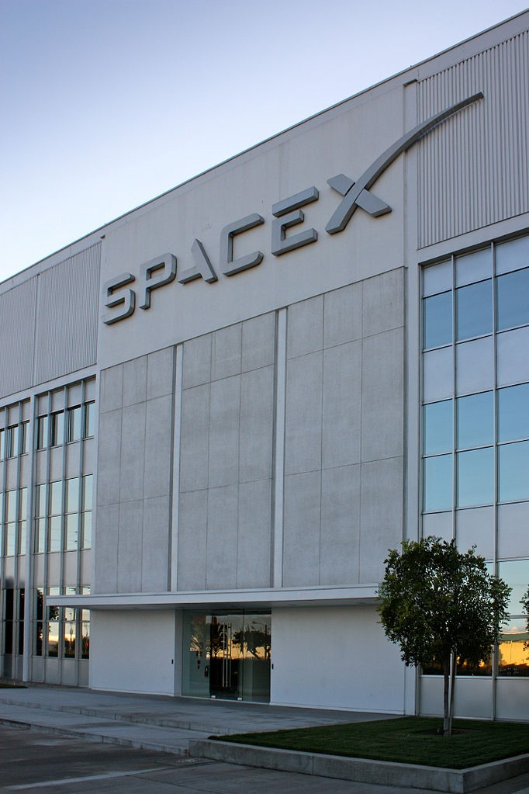

En 2001, Musk conceptualizó “Oasis de Marte”, un proyecto para realizar un invernadero experimental en Marte con cultivos alimenticios adaptados al regolito marciano; esto lo hizo en un intento por recuperar el interés público en la exploración espacial. Musk viajó a Moscú junto con Jim Cantrell (un solucionador de suministros aeroespaciales) y Adeo Ressi (su mejor amigo de la universidad), en octubre de 2001, para comprar los reacondicionados misiles balísticos Dnepr Intercontinental (ICBM) que podrían enviar las cargas útiles al espacio. El grupo se reunió con compañías como NPO Lavochkin y Kosmotras; sin embargo, según Cantrell, Musk fue visto como un “novato” por uno de los principales diseñadores rusos, y el grupo se tuvo que regresar a los Estados Unidos con las manos vacías. Volvieron a Rusia para buscar tres ICBM en febrero de 2002 y llevaron consigo a Mike Griffin, quien había trabajado para el brazo de capital de riesgo de la CIA, In-Q-Tel, así como para el Laboratorio de Propulsión de la NASA, y acababa de abandonar Orbital Sciences, un fabricante de satélites y naves espaciales. El grupo se reunió nuevamente con Kosmotras, y se les ofreció un cohete por 8 millones de dólares; sin embargo, a Musk le pareció demasiado caro; salió furioso de la reunión; había perdido el tiempo viajando a Rusia. En el vuelo de regreso de Moscú, se dio cuenta que lo único que le quedaba era iniciar una compañía para poder fabricar sus propios cohetes. Según Steve Jurvetson, inversor de Tesla y SpaceX, Musk calculó que la materia prima para construir un cohete en realidad era sólo del 3% del precio de venta de un cohete en ese momento. Se llegó a la conclusión de que, en teoría, aplicando la integración vertical y el enfoque modular de la ingeniería de software, SpaceX podría reducir el precio de lanzamiento hasta 10 veces el precio de mercado y aun así disfrutar de un margen bruto del 70%. Con 100 millones de su fortuna, Musk fundó Space Exploration Technologies, o SpaceX, en mayo de 2002. Se convirtió en Director Ejecutivo (CEO) y Director de Tecnología (CTO) de la compañía con sede en Hawthorne, California.